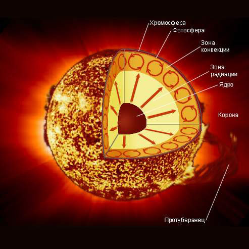

Знайомство із Сонячною системою

Сонце

Меркурій

Венера

Земля

Місяць

Марс

Юпітер

Сатурн

Уран

Нептун

Плутон
На головну
Сонце

Центральне тіло нашої планетної системи – Сонце . Утіленням Сонця в грецькій міфології був бог Апполон. У надрах Сонця за температури в десятки мільонів градусів Цельсія та величезного тиску відбуваються так звані термоядерні реакції . Вони супроводжуються виділенням великої кількості енергії. Щосекунди Сонце випромінює таку кількість тепла, якого б вистачило розтопити шар льоду заввишки тисячу кілометрів.
Термоядерні реакції продовжуватимуться, поки в ядрі Сонця не вичерпаються запаси Гідрогену. Нині вони складають близько 60 % маси Сонця. Такої кількості вистачить щонайменше на кілька десятків мільярдів років.
Наше Сонце – джерело не тільки тепла та світла. Його зовнішні зони – фотосфера, хромосфера та корона – випромінюють потоки невидимих ультрафіолетових і рентгенівських променів, які впливають на характер процесів у земній атмосфері. Ще багато років тому вчені помітили, що активність Сонця підпорядковується своєрідним циклам, протягом яких вона досягає максимального значення, а потім знову спадає. Це відбувається приблизно кожні 11 років. У роки максимальної сонячної активності збільшується кількість плям та спалахів на поверхні світила, невидиме випромінювання досягає найбільшої інтенсивності. У цей час на Землі виникають магнітні бурі, відбуваються порушення радіозв’язку.

Характеристики Сонця
- Діаметр – 1 392 000 км
- Період обертання навколо осі – 27 діб
- Маса – 332 946 мас Землі
- Об’єм – 1 303 600 об’ємів Землі
- Температура поверхні – 5500 оС
- Температура ядра – 15 000 000 оС
- Період обертання навколо центра Галактики – 225 млн років